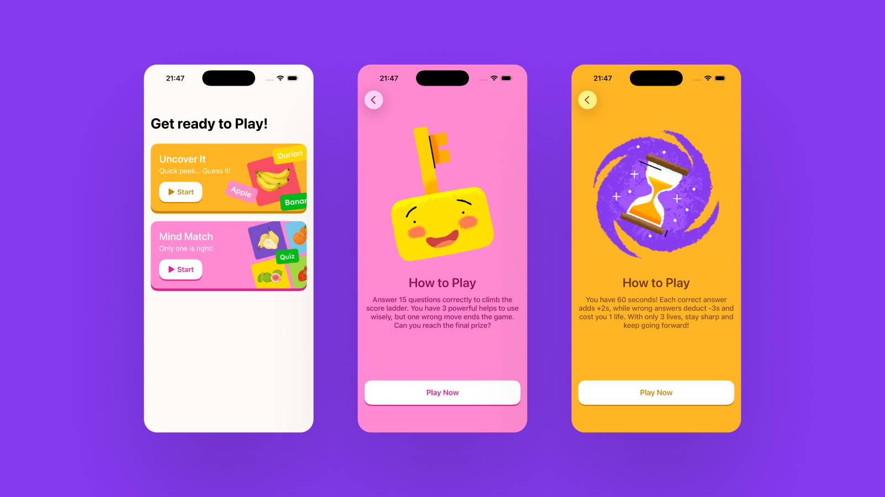
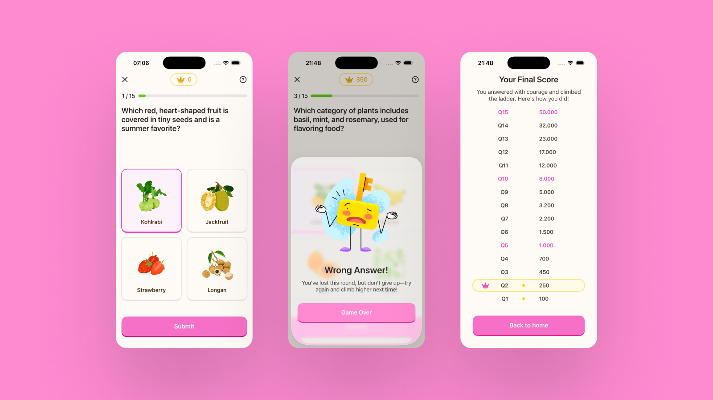
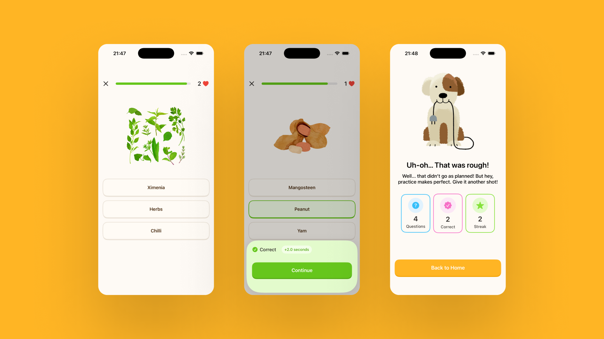
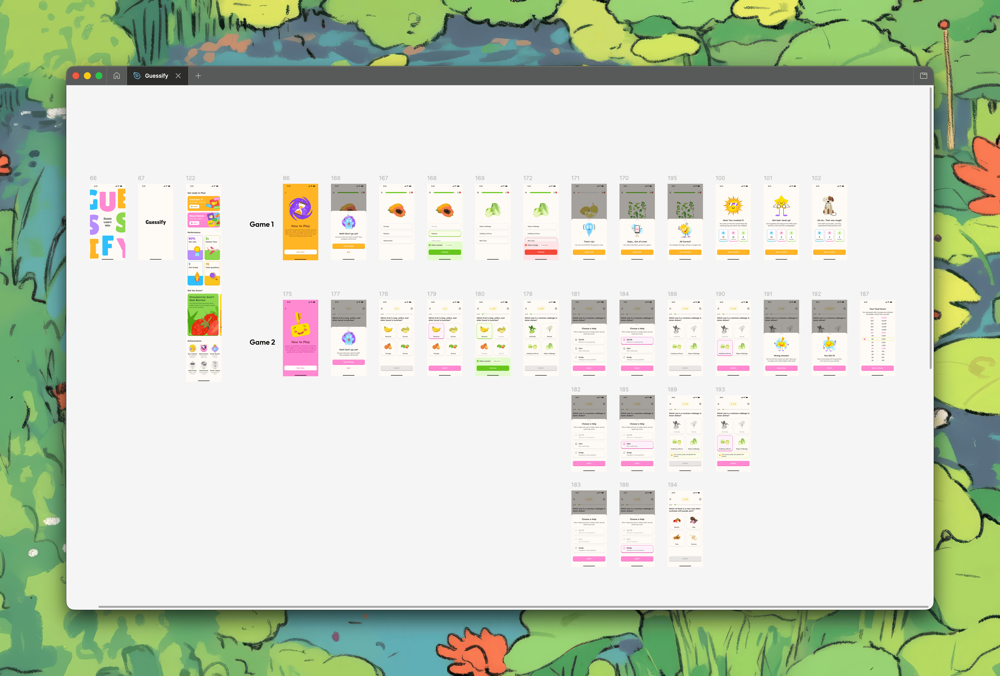
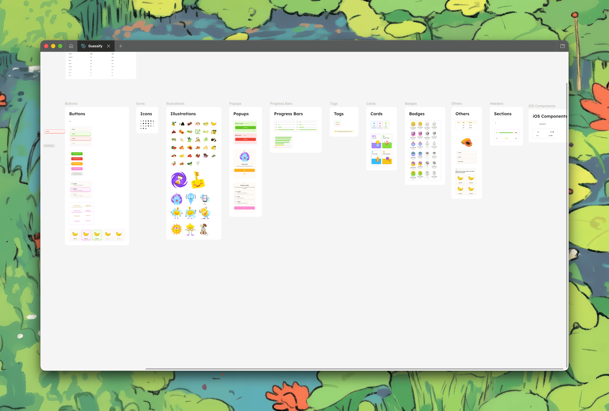
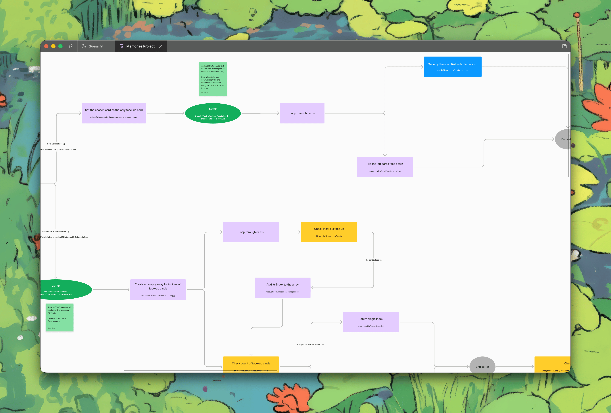
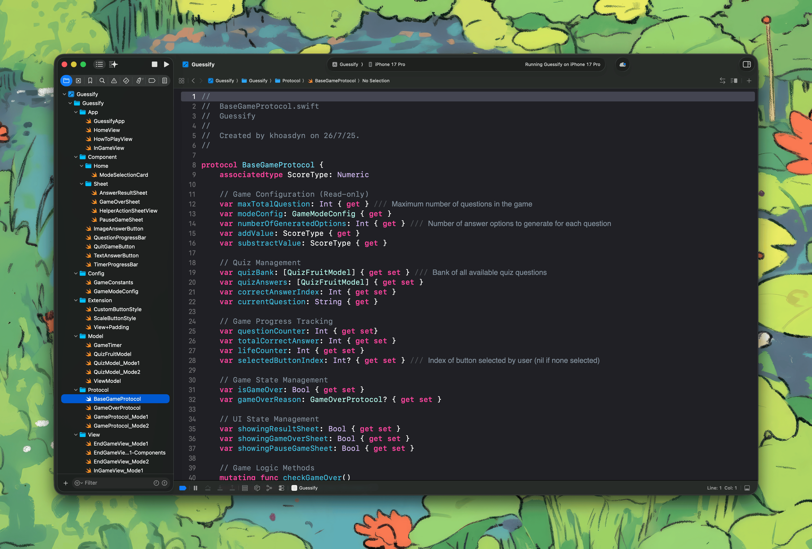

Guessify: I Designed a Quiz Game, Then Built It in SwiftUI
A fruit quiz for iOS with two ways to play. I drew every screen in Figma, then learned enough SwiftUI to build the whole thing myself, so my design had to survive being real rather than clickable.

Project Overview
Guessify is an iOS quiz game about fruit. There are two ways to play, 34 fruits, and one shared bank of questions behind both of them. I designed every screen in Figma and then wrote the app myself in SwiftUI.
It was a personal project with one purpose: to learn SwiftUI well enough to build my own designs instead of handing them over. It is not on the App Store and was never meant to be. The fruit illustrations were drawn by a friend. The design and the code are mine, and the source is on GitHub.
It took a little over four months. Writing the code and fixing the bugs took far longer than drawing the screens did, which is the part of this project I did not expect and learned the most from.

Rules Before the Game
The rules get a screen of their own. Not a tooltip, not a first-run tutorial, and not something you work out by losing. Tapping a mode on the home screen takes you to a full colour screen with an illustration and the exact numbers, and the only thing on it is Play Now.
Both screens state what an answer is actually worth. Uncover It gives you 60 seconds, adds 2 seconds for a correct answer, and takes 3 seconds plus a life for a wrong one. Mind Match gives you 15 questions and 3 helps, and tells you plainly that one wrong move ends the game.
A quiz where you find out what a wrong answer costs by paying it once is not a fair quiz. I wanted the player to be able to weigh a guess before they made it, which they cannot do if the rules are still a surprise.
Why Vietnamese Fruit
I wanted the subject of the app to be about Vietnam, because I am Vietnamese. That was decided before any screen existed, and it settled the content of the whole game.
So the bank is Gac, mangosteen, longan, jackfruit, calamansi, jicama, tamarind, ube, star fruit and okra, alongside the ones everybody knows. A general fruit quiz tends to stop at apples and bananas. This one is worth playing partly because a lot of the answers are things you have to actually look at and think about.

Two Modes, Two Colours
The two modes are deliberate mirror images of each other. Uncover It shows you a picture and asks for the name. Mind Match asks in words and makes you point at the picture. Same fruit, same bank, learned in both directions, and the second one is genuinely harder because recognising a picture is easier than recalling one.
That mirroring runs down to the answer buttons. Uncover It gives three plain text options in a stack, because the picture is already the question and the screen should not compete with it. Mind Match gives four picture tiles in a grid, because there the words are the question.
Each mode owns a colour and never lets go of it. Orange belongs to Uncover It and pink belongs to Mind Match, and the colour carries through the home card, the How to Play screen, the buttons, the sheets and the end screen. Two games living in one app can blur together, and colour is the cheapest way to make sure a player always knows which one they are inside.
Knowing Where You Stand
Answering stops the game rather than sliding past it. A sheet comes up over the options, says whether you were right, and spells out exactly what it cost or earned before you can continue. "Correct, plus 2.0 seconds" is a small piece of copy, but it is the difference between a player who understands the game and one who is only pressing things.
In Uncover It that sheet also pauses the clock, which matters more than it sounds. The timer is the entire pressure of that mode, so reading your own result had to be free. Otherwise the game punishes you for paying attention to it.
The rest of the state is permanently on screen and never hidden behind a tap. Uncover It carries a draining bar and a life count in its header. Mind Match carries the question number, a progress bar and a running score chip. At any moment you can see how much game is left and how you are doing in it.

Designing the Endings
A quiz game is mostly endings. You will finish a run far more often than you will finish the whole bank, so the screen you see when it stops is the screen you see the most.
Every ending gets its own character and its own sentence. Running out of time is not the same feeling as running out of lives, and neither is the same as answering the last question, so none of them share a screen. "Time's Up", "Oops, Out of Lives", "Uh-oh, That Was Rough" and "You Did It" each have their own illustration and their own line of copy. One generic Game Over would have been faster to draw and would have made every loss feel identical.
Mind Match ends on the whole ladder, not a number. All fifteen rungs from 100 to 50,000 are listed with the milestones marked, and your own row is highlighted where you stopped. A single final score tells you how you did. The ladder tells you how far you got and exactly how much was still above you, which is the thing that makes you press play again.


From Figma to Xcode
Every screen was drawn in Figma first, both modes end to end, and behind them a component library grouped by kind: buttons, illustrations, popups, progress bars, tags, cards and badges. That library is the reason two games with different colours and different answer layouts still look like one app.
Then I opened Xcode, and the interesting part started. Building your own design is the fastest way to find out which parts of it you never actually decided. A mockup can show a button in one state and quietly skip the other five. Code cannot. Every state I had not drawn became a question I had to answer, usually while halfway through writing it.
When logic got past what I could hold in my head, I stopped coding and drew it. Flow diagrams for the getters, setters and branches, laid out the same way I would lay out a user flow. Drawing the logic is the same skill as drawing a screen, and it turned out to be the thing that got me through the parts of Swift I did not understand yet.


What I Would Fix
The interface is simpler than the one I drew, and the reason is plain: my SwiftUI was only ever basic, so I designed down to what I could actually finish. Motion is where that shows most. Screens change, sheets appear, and almost nothing moves in between.
That is the first thing I would go back and fix. The transitions between question and result, the score climbing the ladder rather than jumping up it, the fruit arriving on screen rather than being there already. All of it is designed. None of it is built, and the game is flatter for it.
What Building It Taught Me
I am a product designer, not an iOS developer, and this project did not change that. What it changed is what I am able to hand over. I now know roughly what a screen costs before I draw it, because I have paid for a few myself.
It also made me better at the unglamorous half of design. Empty states, loading states, what happens on the very first question and the very last one. Those are the states nobody asks for in a review and every build needs on day one. Four months of finding them the hard way is a habit I kept.
The wider lesson is the one I have carried into everything since: a design is not finished when it looks right, it is finished when someone can build it without guessing. Building this one myself is simply the most direct way I have found to learn where the guessing would have been.